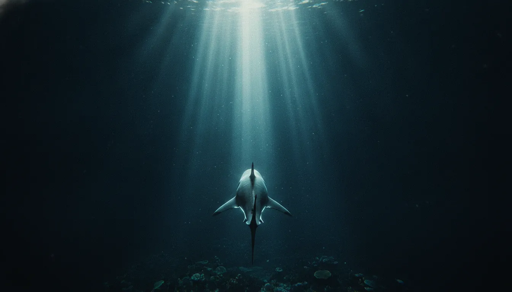
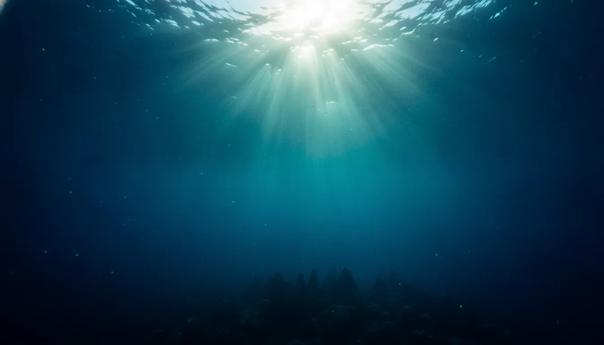
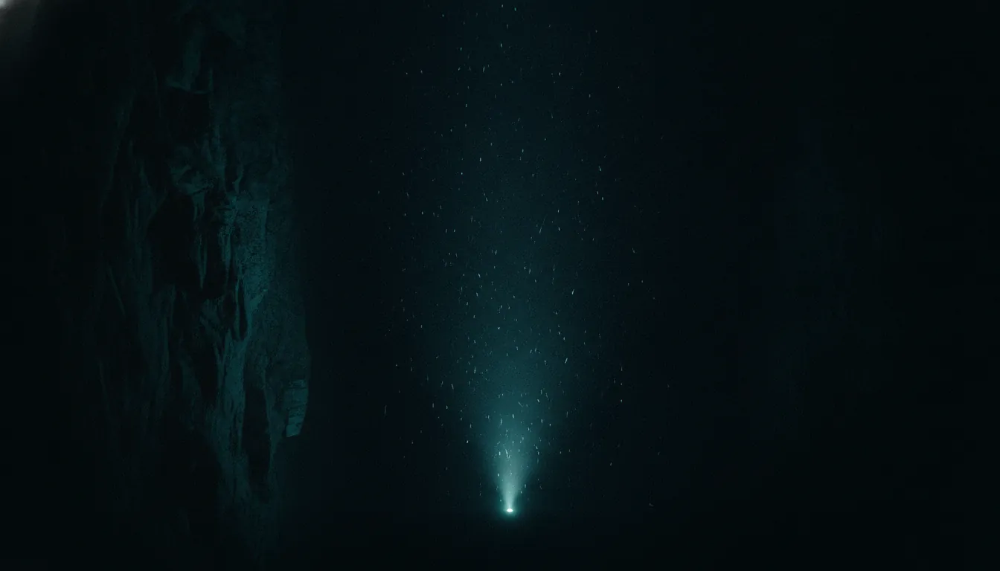
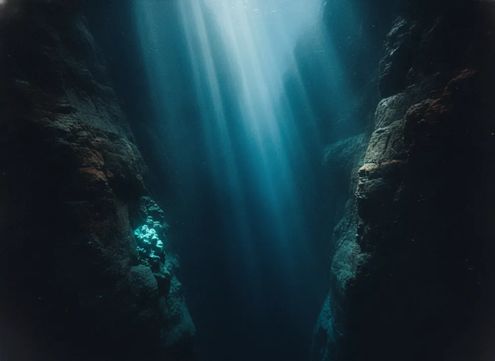
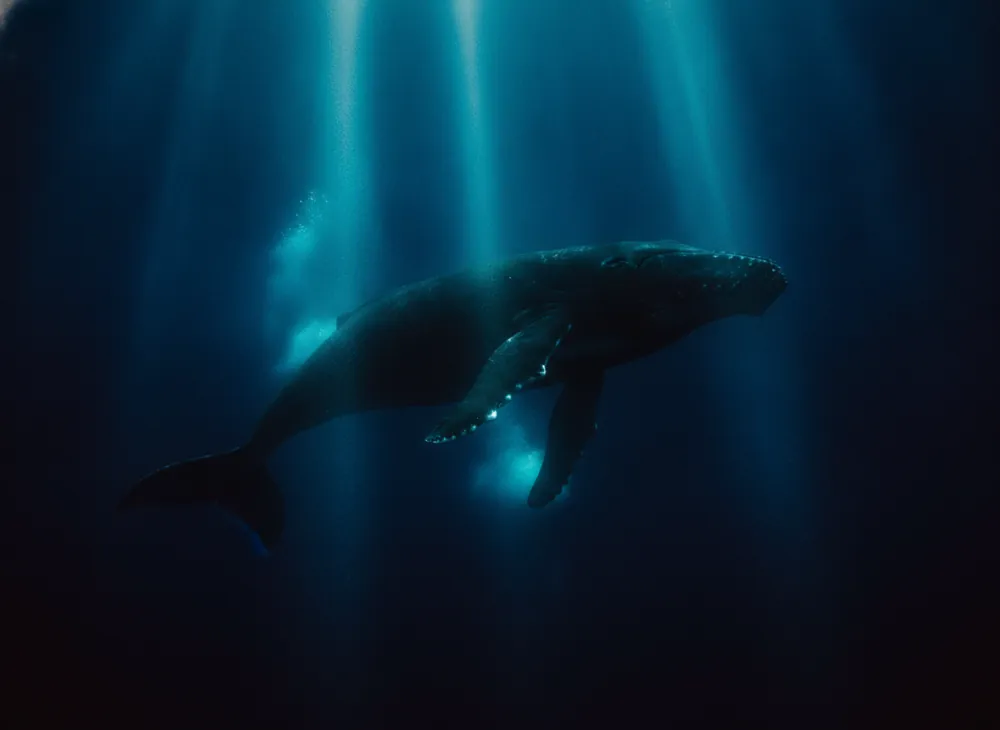
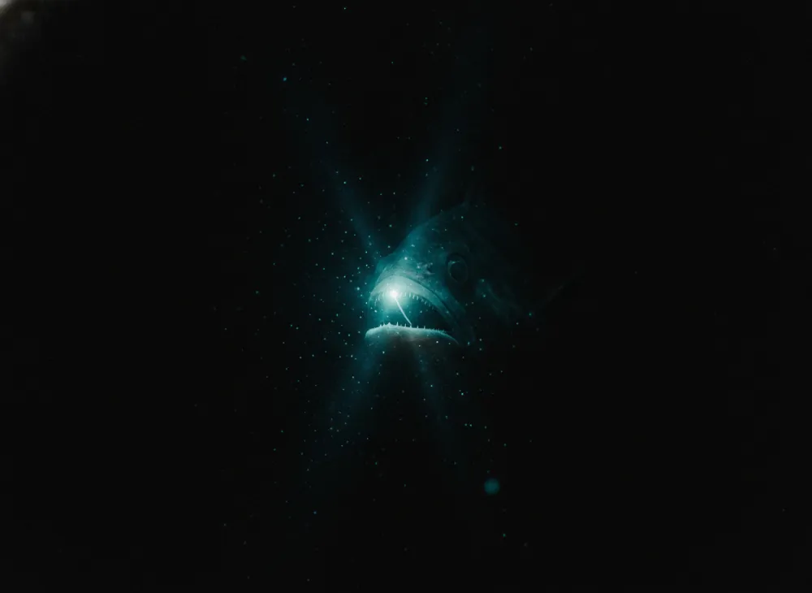
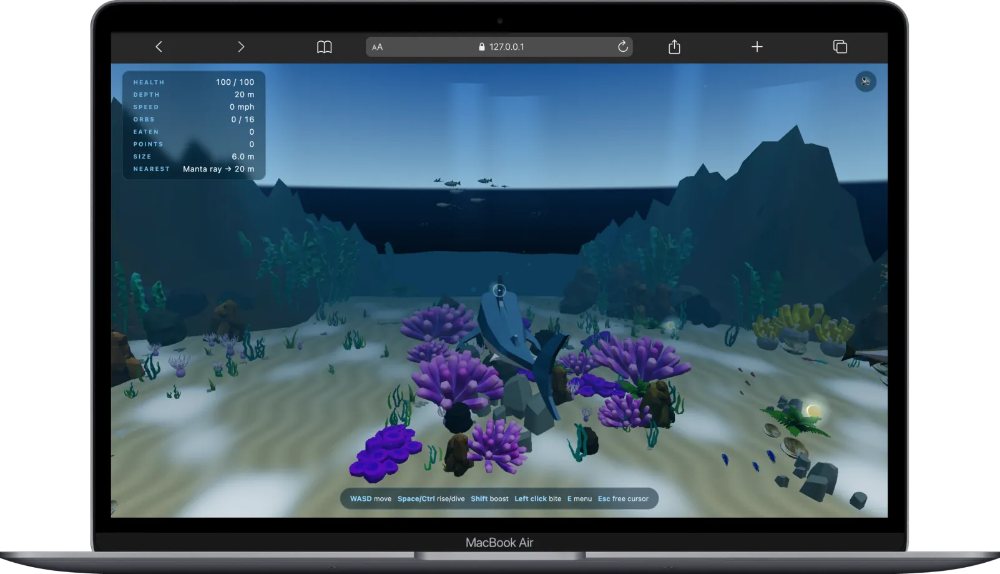
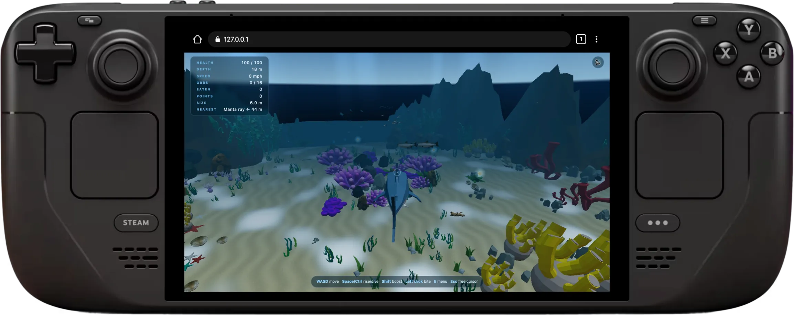
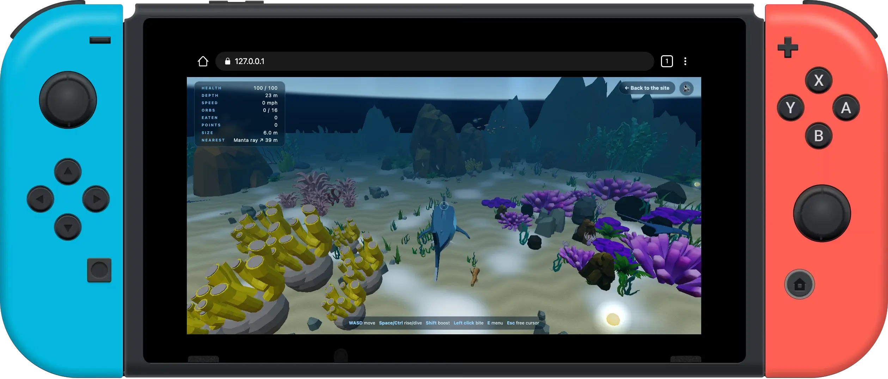

Playable demo · work in progress
Deep Ocean Shark
The ocean does not hand anything over.
You go down and you take it.
Best on desktop. Keyboard, mouse and a real GPU — open this on a laptop and go under.
- Position
- Mariana Trench, W. Pacific
- Floor
- 10,935 m
- Charted
- 2 of 10 levels
- Engine
- Three.js · WebGL

The premise
You are not the
top of this food chain.
Not yet. Hunt, grow, go deeper than you went last time. That is the whole loop, and the ocean is the only thing keeping score.

Ten levels, laid end to end
Depth is the whole game
Nothing is locked and nothing needs a key. What keeps you out of the dark is that the dark kills you — until it doesn't.
-
01
The Shallows playable
Open sand, full sun, and a wall of peaks with one way through it.
0–50 m
-
02
The Reef playable
Deeper, denser, and something down here is bigger than you.
50–200 m
-
03
Unsurveyed
200–500 m
-
04
The last of the light
500–1,000 m
-
05
Unsurveyed
1,000–1,800 m
-
06
Unsurveyed
1,800–3,000 m
-
07
No shark on record has gone past the bottom of this one
3,000–4,000 m
-
08
Unsurveyed
4,000–6,000 m
-
09
Unsurveyed
6,000–8,000 m
-
10
The floor. Whatever you came for is on it.
8,000–10,935 m
A real place, at real depths: the western Pacific, Guam south-west to the southern end of the Mariana Trench. Levels one and two are built and playable now. The other eight are charted, not swum.
Down there
You are not alone in it



Gameplay
What it looks like from inside
Nothing on this row is concept art. One minute of uncut play, and frames pulled straight out of the build.
One link, every screen
Runs on every device
Nothing to download, nothing to install, no store page to wait on. Open a link and you are in the water.
-

Laptop & desktop play now
Full-size ocean in a browser tab, on Mac, Windows or Linux.
-

Steam Deck launching soon
The whole trench in your hands, sticks and triggers included.
-

Nintendo Switch launching soon
Docked on the big screen or handheld under a blanket.
Get in the water.
Two levels are built. It loads on click, and it does not ask you to install anything.
- WASD
- Swim
- SpaceCtrl
- Rise, dive
- Shift
- Boost
- Click
- Bite
- E
- Your shark, in 3D
- Esc
- Free the cursor
Best on desktop. Keyboard and mouse only — come back on a laptop.